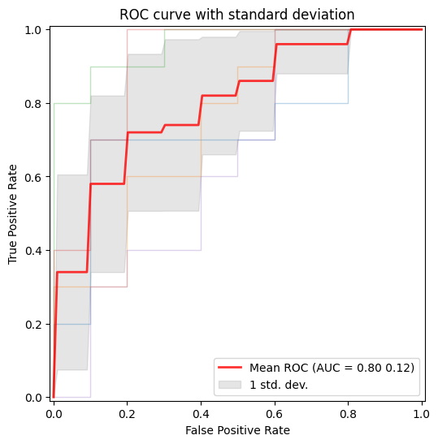

def plot_roc_curve_with_std(y_probs_folds, y_true_folds, fold_legend_info = False):
"""
Plot ROC curves with the standard deviation using the probabilities for each fold after applying crossvalidation.
Parameters:
y_probs_folds: List of arrays of the predicted probabilities (for the positive class) for each fold.
y_true_folds: List of arrays of the true labels for each fold.
"""
true_pos_rates = []
areas_under_curve = []
mean_false_pos_rate = np.linspace(0, 1, 100)
fig, ax = plt.subplots(figsize=(6, 6))
# Loop to get the ROC curve of each fold
for fold, (y_probs, y_true) in enumerate(zip(y_probs_folds, y_true_folds)):
# Calculate the ROC curve for the fold
calc_ROC = RocCurveDisplay.from_predictions(
y_true,
y_probs,
name=f"ROC fold {fold + 1}",
alpha=0.3,
lw=1,
ax=ax,
)
if fold_legend_info == False or fold_legend_info == None:
calc_ROC.line_.set_label('_nolegend_')
elif fold_legend_info == True:
pass
# Interpolate TPR
interp_tpr = np.interp(mean_false_pos_rate, calc_ROC.fpr, calc_ROC.tpr)
interp_tpr[0] = 0.0
true_pos_rates.append(interp_tpr)
areas_under_curve.append(calc_ROC.roc_auc)
# Compute mean and standard deviation of the AUC
mean_tpr = np.mean(true_pos_rates, axis=0)
mean_tpr[-1] = 1.0
mean_auc = auc(mean_false_pos_rate, mean_tpr)
std_auc = np.std(areas_under_curve)
# Plot the mean ROC curve
ax.plot(
mean_false_pos_rate,
mean_tpr,
color="r",
label=r"Mean ROC (AUC = %0.2f %0.2f)" % (mean_auc, std_auc),
lw=2,
alpha=0.8,
)
# Plot the standard deviation of the true positive rates
std_tpr = np.std(true_pos_rates, axis=0)
tprs_upper = np.minimum(mean_tpr + std_tpr, 1)
tprs_lower = np.maximum(mean_tpr - std_tpr, 0)
ax.fill_between(
mean_false_pos_rate,
tprs_lower,
tprs_upper,
color="grey",
alpha=0.2,
label=r"1 std. dev.",
)
# Add labels and legend
ax.set(
xlabel="False Positive Rate",
ylabel="True Positive Rate",
title=f"ROC curve with standard deviation",
)
ax.legend(loc="lower right")
plt.show()Metrics
Metric tracking and analysis tools
Regression metrics
PSNRMetric
def PSNRMetric(
max_val, kwargs:VAR_KEYWORD
):
RMSEMetric
def RMSEMetric(
kwargs:VAR_KEYWORD
):
MAEMetric
def MAEMetric(
kwargs:VAR_KEYWORD
):
MSEMetric
def MSEMetric(
kwargs:VAR_KEYWORD
):
MSSIMMetric
def MSSIMMetric(
spatial_dims:int=2, kwargs:VAR_KEYWORD
):
SSIMMetric
def SSIMMetric(
spatial_dims:int=2, kwargs:VAR_KEYWORD
):
Segmentation metrics
DiceMetric
def DiceMetric(
threshold:float=0.5, instance:bool=False, kwargs:VAR_KEYWORD
):
Wrapper around monai.metrics.DiceMetric Works for binary segmentation with 1-channel logits. Accepts all keyword arguments supported by monai.metrics.DiceMetric Example: DiceMetric( include_background=False, reduction=“mean”, get_not_nans=False, ignore_empty=True )
PanopticQualityMetric
def PanopticQualityMetric(
kwargs:VAR_KEYWORD
):
Wrapper around monai.metrics.PanopticQualityMetric.
Expects: pred : (B, C, H, W) logits target: (B, H, W) or (B, 1, H, W) panoptic map Each pixel contains encoded panoptic label (semantic + instance id).
All kwargs are forwarded to MONAI PanopticQualityMetric.
Classification Metrics
ROCAUCMetric
def ROCAUCMetric(
kwargs:VAR_KEYWORD
):
Wrapper around monai.metrics.ROCAUCMetric Computes Area Under the Receiver Operating Characteristic Curve (ROC AUC).
ROC Curve
Example: plot the ROC curve for the data after applying cross-validation and training in order to visualize the standard deviation to compare between splits.
# For this example the iris dataset is used, but in order to apply it succesfully for binary classification,
# the dataset is reduced to two classes and the features are increased by adding noise.
# Step 1: Data loading and preprocessing
iris = load_iris()
target_names = iris.target_names
X, y = iris.data, iris.target
X, y = X[y != 2], y[y != 2]
n_samples, n_features = X.shape
# Step 2: Adding noise to the data
random_state = np.random.RandomState(0)
X = np.concatenate([X, random_state.randn(n_samples, 300 * n_features)], axis=1)
# Step 3: Application of cross-validation
cv = StratifiedKFold(n_splits=5)
splits = list(cv.split(X, y))
# Step 4: Training of a SVM algorithm
y_probs_folds = []
y_true_folds = []
classifier = svm.SVC(kernel="linear", probability=True, random_state=random_state)
# Obtaining the probabilities and true labels for each fold
for train_idx, test_idx in splits:
# Train and predict
classifier.fit(X[train_idx], y[train_idx])
y_probs_folds.append(classifier.predict_proba(X[test_idx])[:, 1]) # Probabilities for the positive class
y_true_folds.append(y[test_idx]) # True labels for the fold
# Call the function to plot the ROC curve with the standard deviation
plot_roc_curve_with_std(y_probs_folds, y_true_folds, fold_legend_info = False)/home/biagio/miniforge3/envs/biomonai_latest/lib/python3.11/site-packages/sklearn/utils/_plotting.py:176: FutureWarning: `**kwargs` is deprecated and will be removed in 1.9. Pass all matplotlib arguments to `curve_kwargs` as a dictionary instead.
warnings.warn(
/home/biagio/miniforge3/envs/biomonai_latest/lib/python3.11/site-packages/sklearn/utils/_plotting.py:176: FutureWarning: `**kwargs` is deprecated and will be removed in 1.9. Pass all matplotlib arguments to `curve_kwargs` as a dictionary instead.
warnings.warn(
/home/biagio/miniforge3/envs/biomonai_latest/lib/python3.11/site-packages/sklearn/utils/_plotting.py:176: FutureWarning: `**kwargs` is deprecated and will be removed in 1.9. Pass all matplotlib arguments to `curve_kwargs` as a dictionary instead.
warnings.warn(
/home/biagio/miniforge3/envs/biomonai_latest/lib/python3.11/site-packages/sklearn/utils/_plotting.py:176: FutureWarning: `**kwargs` is deprecated and will be removed in 1.9. Pass all matplotlib arguments to `curve_kwargs` as a dictionary instead.
warnings.warn(
/home/biagio/miniforge3/envs/biomonai_latest/lib/python3.11/site-packages/sklearn/utils/_plotting.py:176: FutureWarning: `**kwargs` is deprecated and will be removed in 1.9. Pass all matplotlib arguments to `curve_kwargs` as a dictionary instead.
warnings.warn(
Metrics Reloaded
Metrics Reloaded is a comprehensive recommendation framework designed to help researchers and practitioners in biomedical image analysis select and apply the most appropriate performance metrics for their specific tasks. Traditional validation practices often rely on a few standard metrics (e.g., Dice score, IoU), which might not always reflect the domain-specific interests or characteristics of a particular problem — such as class imbalance, object size, boundary importance, or task type (classification, segmentation, detection). (Nature)
At its core, Metrics Reloaded introduces the concept of a problem fingerprint: a structured representation of properties relevant to metric selection (e.g., whether the problem is semantic segmentation vs. object detection, the importance of boundary accuracy, class prevalence, etc.). Using the problem fingerprint, the framework guides users through a systematic decision process to identify a set of suitable metrics that align with both the task and domain interest. (Nature)
Metrics Reloaded supports a broad range of image analysis tasks, including:
- Image-level classification
- Semantic segmentation
- Object detection
- Instance segmentation
To make the selection process more accessible, Metrics Reloaded is also available as an interactive online tool, where users can explore the framework’s recommendations and walk through the metric selection process based on their problem fingerprint: 👉 https://metrics-reloaded.dkfz.de/ — Metrics Reloaded online tool (metrics-reloaded.dkfz.de)
This tool provides a user-centric way to explore metric strengths, weaknesses, and recommendations tailored to different imaging tasks and validation challenges.
MetricsReloadedCategorical
def MetricsReloadedCategorical(
metric_name, kwargs:VAR_KEYWORD
):
Categorical pairwise metrics of MetricsReloaded library
MetricsReloadedBinary
def MetricsReloadedBinary(
metric_name, kwargs:VAR_KEYWORD
):
Binary pairwise metrics of MetricsReloaded library
Fourier Ring Correlation
Fourier Ring Correlation (FRC) is a frequency-domain method used to quantify the similarity between two independent measurements of the same underlying signal. It is widely applied in fields such as microscopy, cryo-electron microscopy, and super-resolution imaging to estimate spatial resolution in a statistically robust manner. By comparing corresponding Fourier components over concentric rings (in 2D) or shells (in 3D) of equal spatial frequency, FRC provides a frequency-dependent correlation profile that reflects the reproducibility of structural information.
Mathematically, the Fourier ring correlation at spatial frequency ( r ) is defined as:
FRC(r) = \frac{\sum_{k \in r} F_1(k) \overline{F_2(k)}}{\sqrt{\left(\sum_{k \in r} |F_1(k)|^2\right) \left(\sum_{k \in r} |F_2(k)|^2\right)}}
where $ F_1(k) $ and $ F_2(k) $ are the Fourier transforms of the two independent images, $ k $ denotes frequency coordinates lying on a ring of radius $ r $, and the overline indicates complex conjugation. The numerator measures cross-correlation of corresponding Fourier coefficients, while the denominator normalizes by their respective spectral energies.
A function that calculates an FRC-based metric determines a resolution criterion by identifying where the FRC curve crosses the predefined threshold at 1/7.
The resulting FRC curve provides a frequency-resolved measure of signal consistency, and the derived cutoff frequency can be converted into a spatial resolution estimate.
Radial mask
radial_mask
def radial_mask(
r, # Radius of the radial mask
cx:int=128, # X coordinate mask center
cy:int=128, # Y coordinate maske center
sx:int=256, # Size of the x-axis
sy:int=256, # Size of the y-axis
delta:int=1, # Thickness adjustment for the circular mask
):
Generate a radial mask.
Returns: - numpy.ndarray: Radial mask.
get_radial_masks
def get_radial_masks(
width, # Width of the image
height, # Height of the image
):
Generates a set of radial masks and corresponding to spatial frequencies.
Returns: tuple: A tuple containing: - numpy.ndarray: Array of radial masks. - numpy.ndarray: Array of spatial frequencies corresponding to the masks.
Fourier ring correlation
get_fourier_ring_correlations
def get_fourier_ring_correlations(
image1, # First input image
image2, # Second input image
):
Compute Fourier Ring Correlation (FRC) between two images.
Returns: tuple: A tuple containing: - torch.Tensor: Fourier Ring Correlation values. - torch.Tensor: Array of spatial frequencies.
FRCMetric
def FRCMetric(
image1, # First input image
image2, # Second input image
):
Compute the area under the Fourier Ring Correlation (FRC) curve between two images.
Returns: - float: The area under the FRC curve.